"Archive 2016-2017"
"Archive 2015-2014" "Archive 2013-2012" "Archive 2011"
"Archive 2010" "Archive 2009" "Archive 2008"
"Archive 2007-2006" "Archive 2005-2004" "Archive 2003"
My sweet husband got me a
treadmill for Christmas.
(I asked for one, he didn't just give me one as a hint or anything!!)
I cut some holes in the big box that it came in and
made an awesome cat house out of it.
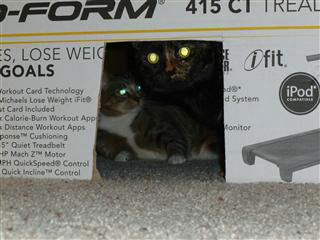
Here they take the "his" and "hers" sides of the bed
while
I labor to put the treadmill together from approximately 2,000 parts.
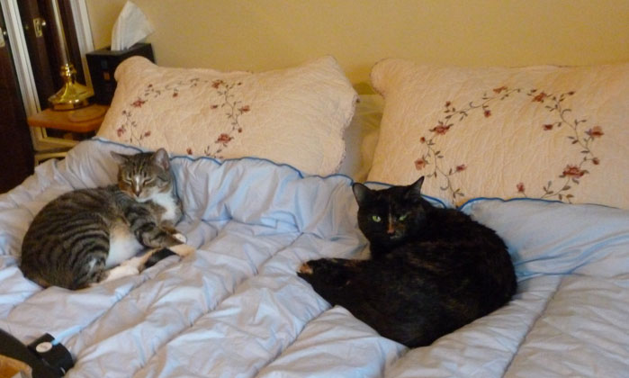
Here Ellie & I enjoy the Christmas
lights in Bricktown on a fairly warm December evening.
We had just enjoyed a nice meal at "In the Raw" sushi - a great
evening!
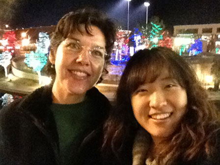
We had a HUGE crowd this year, I think it was almost 50 people!
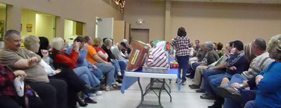
Here Greg shows off the Nerf pistol
he got to the people who had
stolen his Nerf rifle. (They ended up with both guns!!)
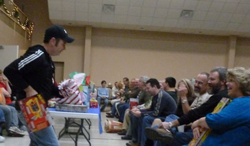
This is how Rocket helps me decorate the Christmas tree.
See how the lights shine through his tubby belly?
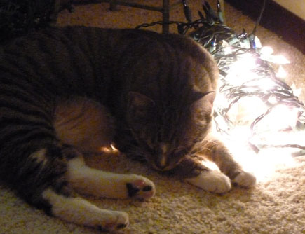
stretching out the box I was about to use.
It's like a public service.
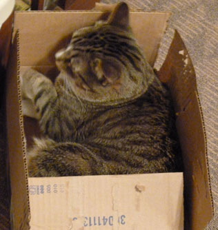
This is how Feisty helps me put up the Christmas tree.
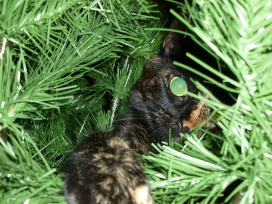
This is how Feisty helps me wrap Christmas gifts. She has a heart to help!
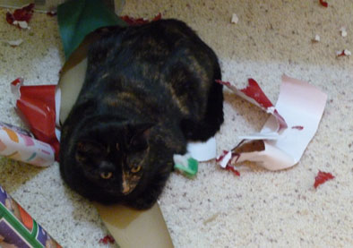
I've been trying to re-learn the piano, but each time
I try to practice, I feel like I'm a lifeboat in a shark-infested sea.
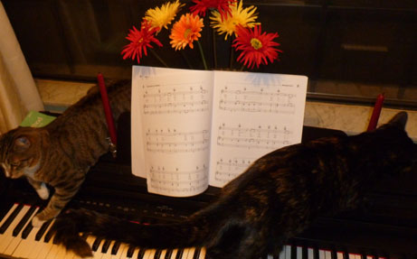
Here we are! This is most of the
gang of "regulars" that did the 6am spin class with Peter
Monday, Wednesday, and Friday each week at Aspen Athletic for
years.
Most of us are now at Pacer.
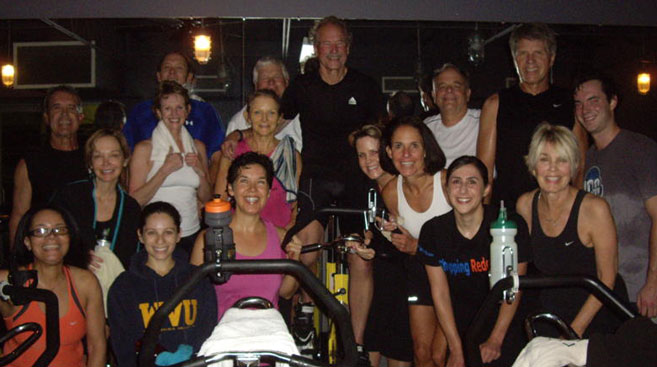
Enjoying Ethopian food with my buddy Ellie in November 2011
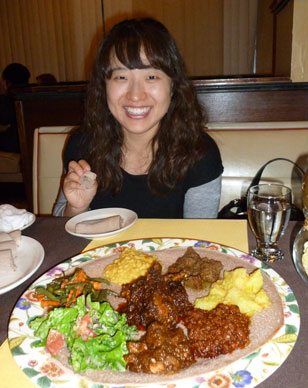
Psycho Shawnna with Lovely Ally
enjoying Korean Day at OCU
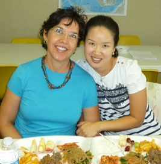
Mom with her running buddies at a race in Jay on a very chilly morning in October '11
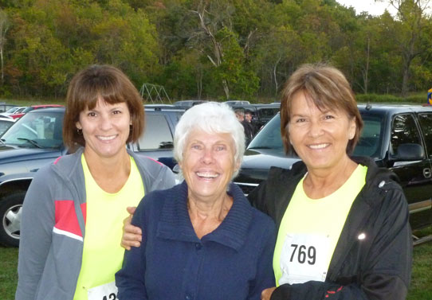
Lovely lunch with Candice at the Art Museum
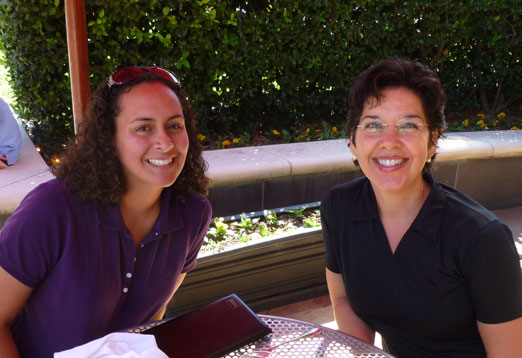
We had the joy of introducing Wei & Jaiyi to the game of baseball one night at a Redhawks game
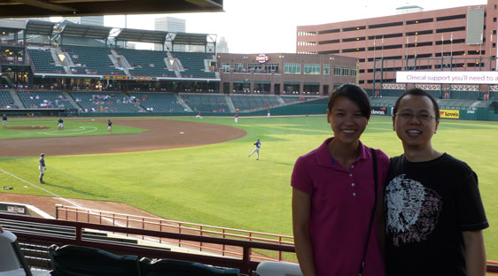
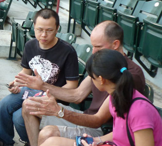
Rocket is not much of a snuggler,
but he made an exception on this day.
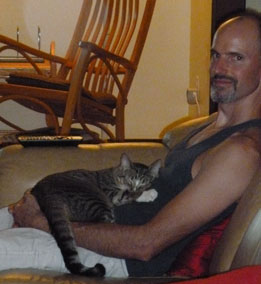
Feisty is beautiful to me, but
it is hard to get a good picture
of her. This one comes close.
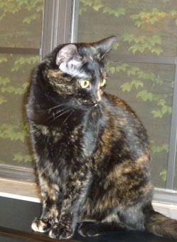
essence of both cats' personalities in one shot.
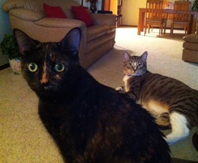
In mid-September we moved from our beloved old
home to a
newer place which we also really enjoy in the city.
Here, Rocket helps with the packing.
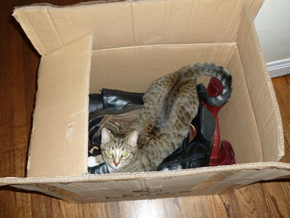
Some great friends of ours from church put in a LONG day of moving us.
Here we enjoy a brief rest while we enjoy some lunch.
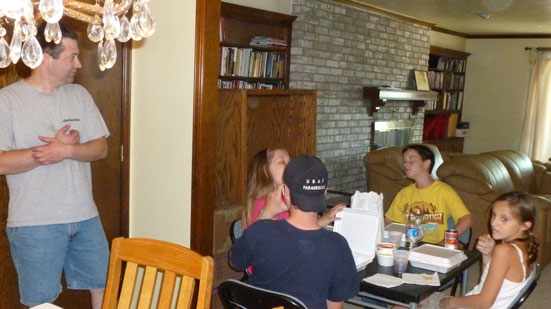
Here Feisty enjoys the little house
that Rusty & Cody gave them as a gift.
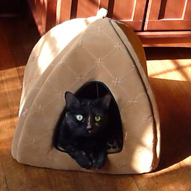
Here Rocket is not pleased at having to wait his turn in the house.
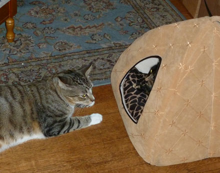
Desirae & I got to spend an
evening together
shopping when she was in town on business.
Here I find a new friend that I just had to buy.
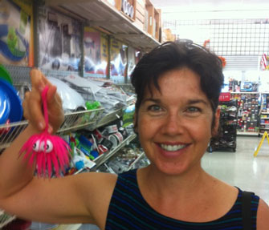
As a child, my favorite stuffed animal wore a hat just like this.
I felt like a real train conductor for a moment there!
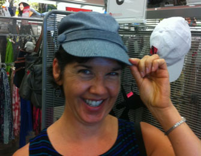
Ellie & I enjoyed a great sushi dinner together one night in September - we ordered the boat!
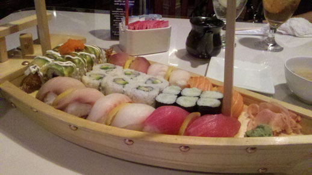
July was so hot, we rarely peeped out.
One day we tried the Cowboy Hall of Fame but the inside was overly
air-conditioned, and the lovely garden and park area was miserably
hot. Sadness.
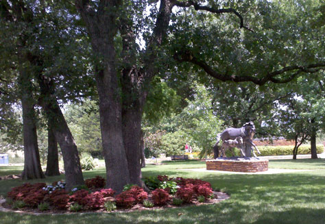
Burmese traditional dancers at a picnic celebrating World Refugee Day
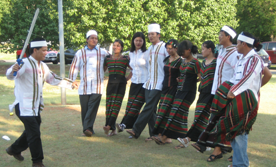
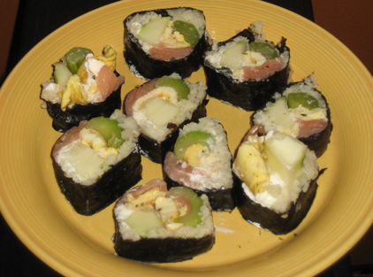
Here's my attempt at Korean sushi,
also known as Kim Bob. It was good!
Reince Priebus, chairman of the
Republican National Committee.
He gave a talk in mid-June
which I was able to attend.
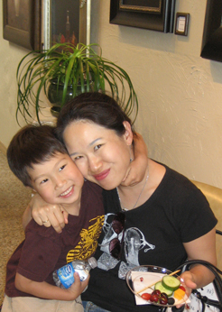
hair band she just got for getting such good grades.
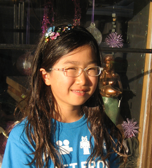
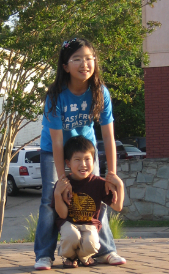
Are these two cute or what?!
For the past couple of
months, I have been blessed to be able to work from home 3 days a week.
Let me tell you, it is awesome. Usually the cats go off somewhere and
sleep all day, but sometimes
they decide to hang out with me. On this day my lap and my reference
materials were particularly attractive.
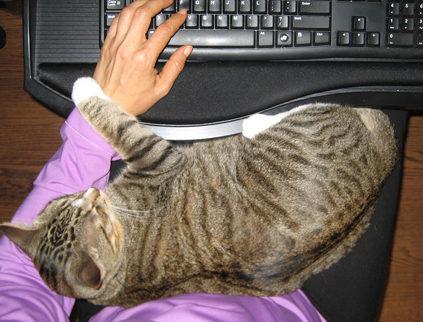
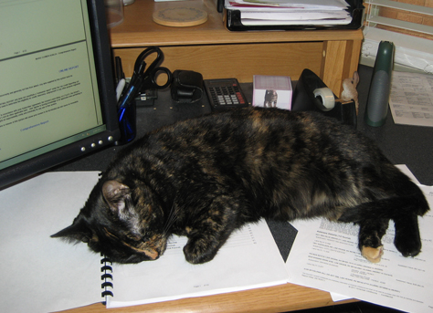
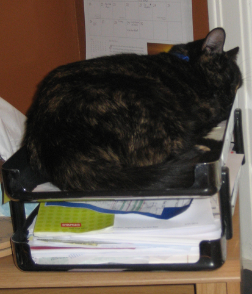
My Inbox is so full of urgent
matters, how will I ever get
it all done? :-)
I grew this myself!
When softball-sized hail was predicted one
evening, we decided we'd rather not have Eric's
windshield knocked out. My clever husband managed to get both cars in
our one-car garage.
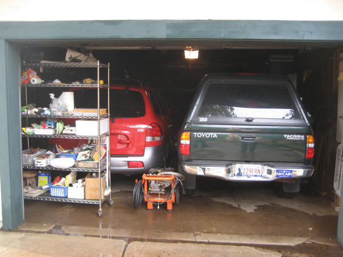
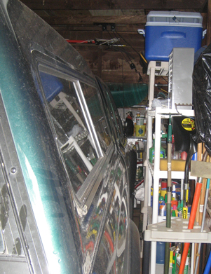
I'm not even sure if there was a full inch of room on this side!]
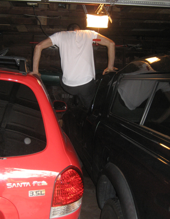
He had to get in and out of his truck "Dukes of Hazzard"-style
Below you see some 'wildlife' who decided to hang with us, and a big storm cloud that was brewing for someone to our east.
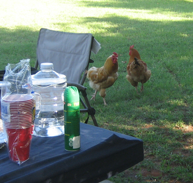
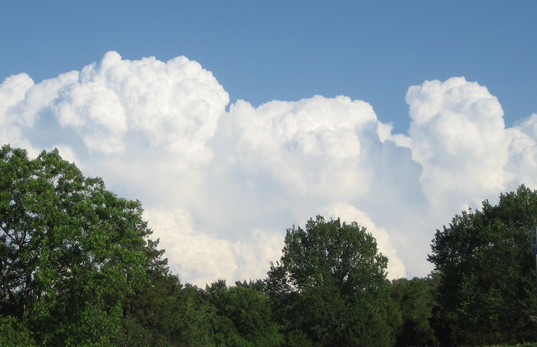
Scott, Michelle, Eric, Melanie, and Ankur
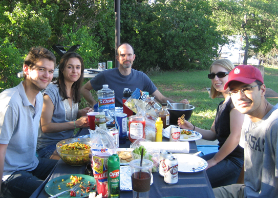
Ellie made me Kim Bob one night
for dinner - it's like Korean sushi and
is eaten very commonly in Korea.
It was great!!
We attended a very nice graduation party for him which included a "champagne bath" - he was a great sport.
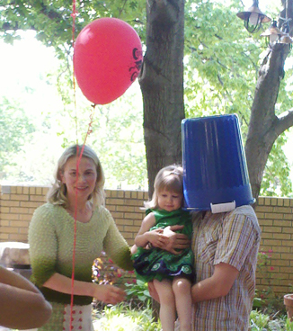
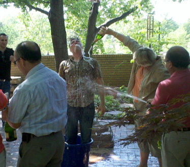
Dinner at 105 Degrees with Ellie
OKC was in the middle of a terrible and
very long drought when I went to visit my parents
in Westville and saw they were in the middle of terrible floods. They
had rain every day for nearly a month.
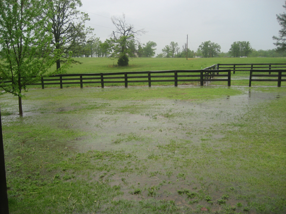
My parents' front yard - and this is one of the highest
points in Westville.
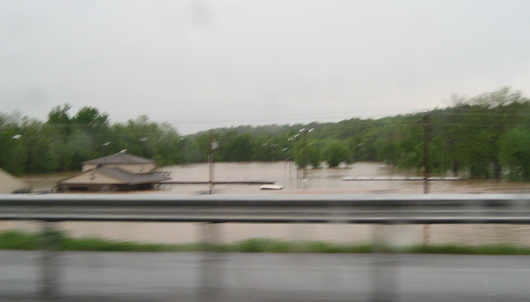
This is a moto-cross track beside the Illinois River.
Well, it's usually beside the river.
For a week or so it was IN the river.
Oh, yeah, and my friends:
Ellie, Emily, Ally, and Sean
We're at Moe's for dinner.
"Welcome to Moe's!"
Baby shower for Joan & Bryan - this
crowd is mostly
made up of hot yoga students and teachers.
Joan continued to practice up until her due date.
pampered indoor dog before Desirae
got married. Now she's a cow dog.
(OK, maybe she just looks at the cows
from the safety of the truck cab.)
The much-loved Pastor Chuck Smith visited
our church this spring and we were very honored to meet him.
What a wonderful spirit he has - amazingly positive and loving to
everyone.
Pastor Ken with Pastor Chuck
Scenes from an outing in Tulsa with
Desirae & Mom.
Did I mention that Mom is always game for trying on a funny hat? She's
a lot of fun.
The robins have returned, our fruit
trees are in bloom,
the Panseys are blooming...it must be Spring!!
Rocket will wedge himself into it and then hope like crazy
that someone will come along and touch it so that he can attack.
Look at my artistic style on this shot. I
capture one cat in deep
thought and another in a deep stare in the mirror. Yes, I'm getting
good at this.
If only it wasn't all out of focus and crooked...
A whole group of us from work volunteered there for a few hours one day, it was fun.
My Mom is always a
lot
of fun when there's a
strange hat to be tried on.
Rocket pulls out all the stops for the 'cutest cat in the house' award.
I put one of Eric's t-shirts on the desk behind
my computer monitors.
It is apparently better than any high-dollar cat bed as a sleeping spot.
and his School of Ministry graduation certificate
at our church, Calvary Chapel of OKC.
This was taken from the back of the church
with my phone, so pardon the poor quality.
Rocket decided that ponytails were one of the best cat toys ever!
Ellie with a chocolate-covered
strawberry on an evening that
we went out for dinner together.
This is the meat department at the
Wal-Mart Super Center right
before the second ice storm in two weeks was predicted to hit.
It looked like the end of the world.
that covers his little evergreen trees to the top.
around in the snow in the trail wagon. They
had Long Dog with them at the time, of course!
Once sworn enemies, these two are starting to
warm up to one another.
Here they are just waking up from a nap, notice the entwined front legs.
friends Ally, Emily, and Sean Bae on January 4th. It was great!
Here Eric teaches Sean some stretching techniques
We enjoyed a short but sweet visit from our good friends the Chodzkos
on January 1.
What a great way to start the year!

"Archive 2015-2014" "Archive 2013-2012" "Archive 2011"
"Archive 2010" "Archive 2009" "Archive 2008"
"Archive 2007-2006" "Archive 2005-2004" "Archive 2003"